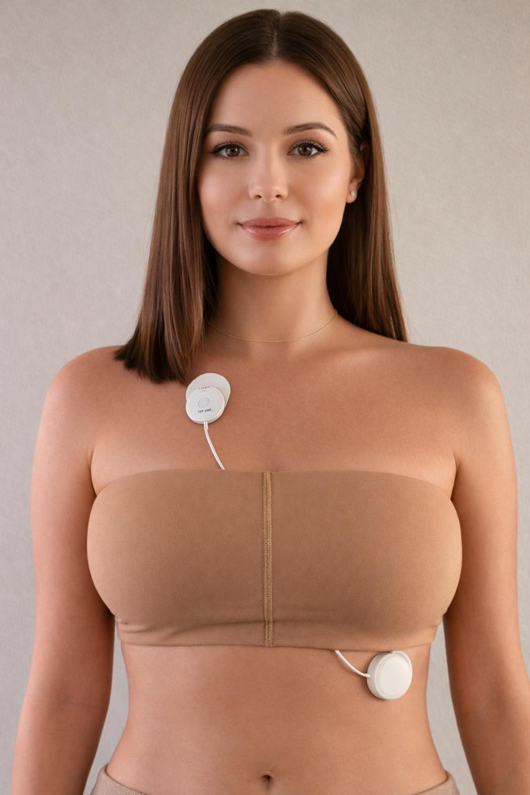

FAQ
Frequently Asked Questions
Everything you need to know about Specialized Medical's cardiac monitoring services.
How It Works
Your medical assistant completes a simple 3-step process: Enroll in web Portal → Hook Up → Disconnect (Under 15 Minutes). The workflow is designed to be straightforward for office staff and easy to repeat across patients. Once the patient is enrolled and leaves the office, Specialized Medical takes over the rest with continuous monitoring, real-time alerts, report generation, and patient support.
In most cases, setup takes under 15 minutes. The process is designed to fit into normal office workflow without adding unnecessary burden to staff.
Once the patient leaves, Specialized Medical manages the active monitoring process for you. That includes 24/7 live monitoring across all test types, real-time arrhythmia alerts by email, text, or phone call, automatic generation and delivery of final reports, and patient support through our 24/7 multilingual call center.
Real-time arrhythmia alerts are delivered by email, text, or phone call, helping practices receive important findings quickly and respond appropriately.
Reports and Data
Yes. Final reports are EMR-ready and can be automatically pushed into your system. Reports are typically delivered within 24–48 hours after test completion, supporting faster physician review and a more efficient office workflow.
Yes. Our workflow supports electronic physician review, interpretation, dating, and signature of final reports.
Symptoms are entered digitally during the test and automatically appear on the final report above the matching ECG strips, making symptomatic vs. asymptomatic events immediately clear.
Data is transmitted live to our monitoring center with no manual uploading and no data delays.
Billing and Reimbursement
Yes. Customized billing templates with CPT and ICD-10 codes are provided to support efficient billing workflow.
Yes. We work directly with your billing staff or third-party biller to support seamless claims submission.
Practices routinely receive gross reimbursements exceeding $875.00 for a Holter test followed by a Telemetry test, based on current Medicare rates.
Supplies and Equipment
Our primary featured monitoring system is S-Patch. Lead-Wire remains available as a secondary monitoring option where appropriate. For device-specific details, see Monitoring Equipment Options.
No. Device-specific details should be shown under the correct system so practices are not given the impression that every monitor shares the same physical specifications. See Monitoring Equipment Options for the current specs.
No. Specialized Medical provides the equipment needed to support your program, with no equipment purchase required.
Supplies include electrodes, batteries, razors, alcohol wipes, and other essentials needed for monitoring.
We provide as many monitors as your patient volume requires.
Patient Experience
Yes. S-Patch is designed to be lightweight, easy to wear, and simple for patients to manage throughout the test. Comfort and ease of wear are central to our patient-friendly approach. Lead-Wire specifications differ—see Monitoring Equipment Options for details.
S-Patch is water-resistant (IP55) to better support everyday wear. Specifications can vary by system, so please refer to the device-specific details under the correct equipment option.
S-Patch runs for a minimum of 10 days per battery, supporting longer monitoring periods with less interruption. Battery performance can vary by system.
S-Patch supports up to 30-day wear duration. Lead-Wire specifications differ and are shown separately under Monitoring Equipment Options.
S-Patch weighs just 0.6 oz, or less than four sheets of paper, making it compact, lightweight, and easier for patients to wear. Dimensions and weight can vary by system.
Beta Trial
The No-Risk Beta Trial allows your practice to try Specialized Medical on a few patients and experience the value of our system firsthand, including live-streaming ECG data and a simplified office workflow.
If Specialized Medical is not the right fit for your practice, we will take everything back — no hassle, no obligation.

What People Are Saying
They immediately transmitted the reports to me and then called me on my cell phone.
I did not even realize I was wearing it
If it was not for Specialized Medical's technology and service I am not sure if this patient would be around today.
Start Your No-Risk
Beta Trial
See how Specialized Medical can support your practice with: live-streaming ECG data; simplified office workflow.
Evaluate Specialized Medical with no long-term commitment.